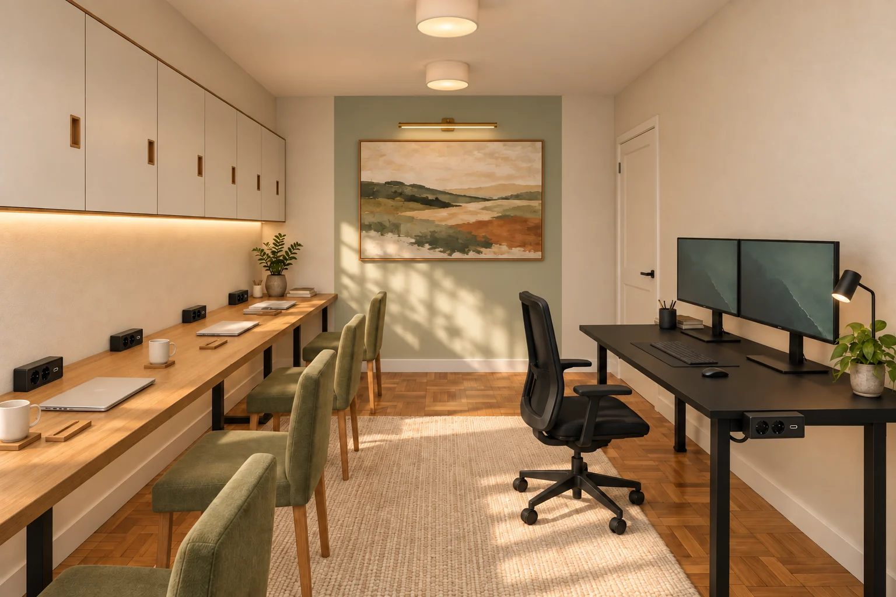
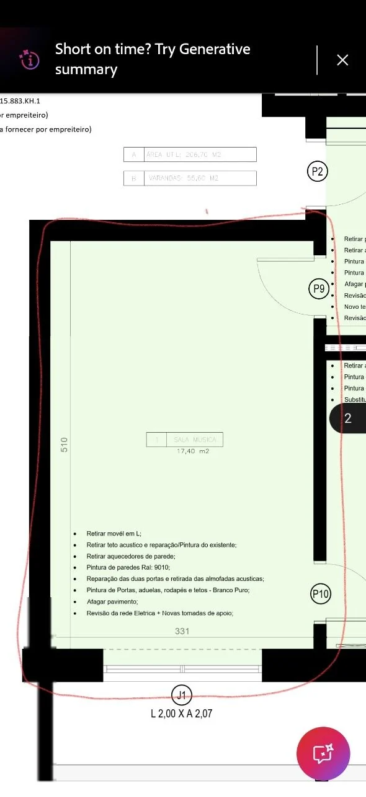

Concentrar.
MAGNUS original de 150 × 70 cm na parede entre P9 e P10, dois monitores de 27″ e cadeira com rodas. Parede livre acima dos monitores. Candeeiro de tarefa e módulo com 2 tomadas + USB-C preso por grampo à aresta do tampo.
Casa nova / Escritório
Tomadas acessíveis em todos os lugares e cinco propostas para a parede do fundo: galeria, móvel de arrumação, quadro branco, mural e banco. Mantêm-se a MAGNUS, os quatro lugares na bancada e a parede livre sobre os monitores.

A bancada à esquerda e a MAGNUS entre as duas portas à direita.
Não foi possível carregar a imagem. Mantém a galeria e os ficheiros na mesma pasta.
Modelo construído em metros a partir das cotas da planta. Podes rodar, aproximar, entrar na divisão e ocultar a arrumação suspensa para ver os tampos.
MAGNUS original de 150 × 70 cm na parede entre P9 e P10, dois monitores de 27″ e cadeira com rodas. Parede livre acima dos monitores. Candeeiro de tarefa e módulo com 2 tomadas + USB-C preso por grampo à aresta do tampo.
Bancada de 440 × 65 cm na parede oposta, com quatro lugares de 110 cm. Tampo contínuo, apoios entre lugares e um módulo de 2 tomadas + USB-C em cada posto. Cabos recolhidos debaixo da mesa.
Armários suspensos de 30 cm de profundidade apenas sobre a bancada para quatro, com portas de correr e luz integrada. Tapete de trama baixa ao centro e tacos semelhantes aos da sala.
Cinco propostas para a parede livre
| Ambiente | Sugestão para a parede do fundo |
|---|---|
| 01 · Cozy · galeria iluminada | Quadro de paisagem de 150 × 90 cm, sobre uma faixa verde suave de 180 cm, com aplique de quadro. |
| 02 · Biblioteca · móvel de arrumação | Móvel de 160 × 32 × 215 cm, com base fechada, coluna lateral e nichos para livros e objetos. |
| 03 · Sala de ideias · quadro branco | Quadro branco de escrita de 180 × 120 cm, com tabuleiro para marcadores e superfície magnética. |
| 04 · Atelier · mural e cortiça | Mural geométrico em terracota e areia, com painel circular de cortiça de 100 cm para referências. |
| 05 · Pausa · banco com arrumação | Banco de 160 × 40 × 46 cm com arrumação fechada e painel estofado em arco na parede. |
Para trabalho em conjunto, escolheria a opção 3: um quadro branco de sala de aula, pronto para escrever e explicar ideias. A opção 2 é a mais útil para guardar materiais; a 5 acrescenta um pequeno lugar de pausa.
O móvel da opção 2 mede 160 × 32 × 215 cm. O banco da opção 5 mede 160 × 40 × 46 cm e guarda materiais debaixo do assento. Ambos ficam no centro da parede, fora do arco estimado de P9; confirmar o vão real. Junto à primeira cadeira, o acesso ao banco é apertado quando o lugar está ocupado.
As medidas orientam a proposta
| Elemento | Dimensão proposta |
|---|---|
| Divisão · cotas de origem | 3,31 × 5,10 m |
| MAGNUS original | 1,50 × 0,70 m · h 0,735 |
| Bancada para quatro | 4,40 × 0,65 m · h 0,75 |
| Tapete central | 1,80 × 2,80 m |
| Armários sobre a bancada | 4,00 × 0,30 × 0,70 m |
| Parede sobre a MAGNUS | Livre, sem armário |
| Tomadas acessíveis nos tampos | 5 módulos · 10 tomadas + 5 USB-C |
Entre as frentes dos tampos ficam 1,91 m, incluindo uma reserva de 5 cm atrás da MAGNUS para afastamento da parede.
Com uma ocupação ilustrativa de 60 cm para lá de cada tampo, restam 71 cm entre pessoas sentadas. A disposição funciona, mas a circulação fica apertada quando os lugares opostos estão em uso; a folga depende das cadeiras e da posição em que forem usadas.
Os quatro lugares têm 1,10 m de largura por pessoa. Os armários começam a 1,55 m do chão sobre a bancada. Não há armário sobre a MAGNUS. As portas de correr evitam folhas a abrir sobre os utilizadores.
Dimensões da MAGNUS consultadas na página oficial da Secretlab. Foi assumida a versão original de altura fixa; confirmar a variante antes de encomendar a marcenaria.
Dois plafons opalinos fornecem luz geral. LED com difusor sob os armários ilumina a bancada para quatro, com comando independente. Um candeeiro de tarefa orientável serve a MAGNUS. Luz de 3000 K proposta; a quantidade de luz deve ser calculada com as luminárias escolhidas.
M1 a M4: um módulo de superfície em cada lugar da bancada, com duas tomadas e USB-C. M5: o mesmo serviço na MAGNUS, com fixação por grampo na aresta, sem furar o tampo. São cinco módulos e dez tomadas no total, mais cinco portas USB-C. As alimentações E1/E2/E3 e os dados chegam pelas paredes; os cabos ficam nas calhas inferiores. Modelos, folgas dos grampos e ligações a confirmar na escolha do equipamento.
Arrumação da bancada: oito frentes de 50 cm. A parede por cima da MAGNUS fica livre. Estrutura, espessura do tampo, calhas das portas e fixações devem ser dimensionadas para as cargas e para a parede existente. Tapete sem franjas, de trama baixa, com base antiderrapante.

Cotas legíveis: 3,31 m de largura, 5,10 m de comprimento e janela J1 com 2,00 × 2,07 m.
O desenho escreve 17,40 m², enquanto o retângulo cotado calcula 16,88 m². A proposta mantém as cotas lineares; não foi alargada para coincidir com a área escrita.
Por leitura gráfica: portas com cerca de 75 cm e as suas posições. P9 abre para dentro; P10 para fora, conforme a leitura da imagem. Hipóteses de representação: teto a 2,65 m, portas com 2,10 m de altura e peitoril a 25 cm. Estes valores não vêm cotados e devem ser medidos.
Os móveis são dimensionados no modelo; as imagens de ambiente ilustram materiais e luz e podem conter pequenas variações. Usa a planta e os alçados para conferir a implantação.
Galeria local, utilizável sem Internet. Conserva a pasta escritorio com as suas subpastas para manter as ligações.
{kind=link}
{kind=link}
{kind=link}
{kind=link}